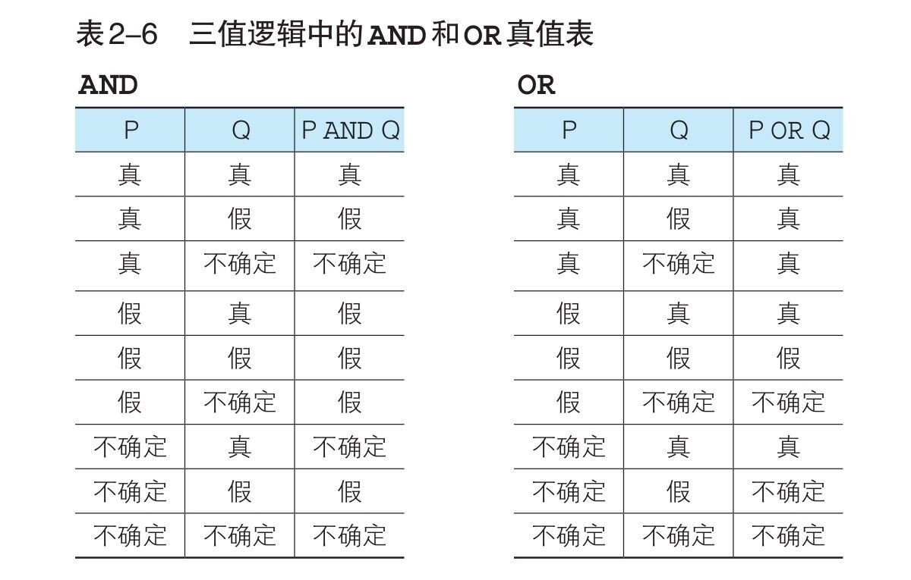
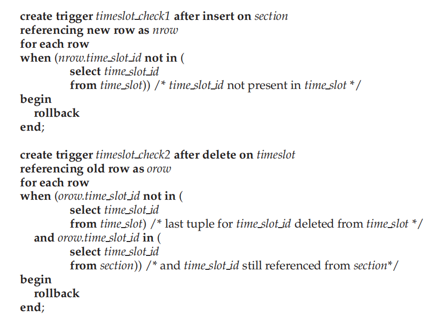
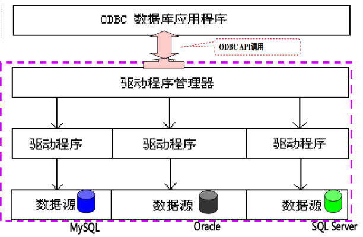
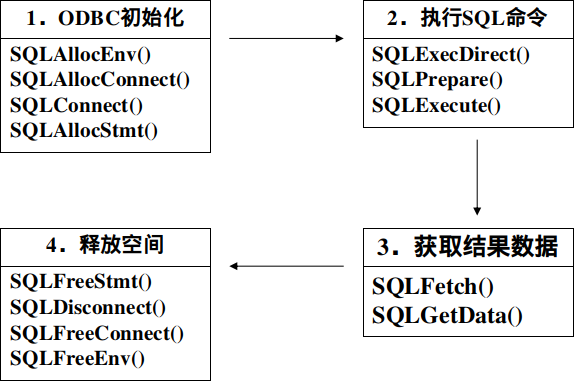

基础SQL
一、一些概念
行称为记录 record，也可以叫做元组 tuple。列称为字段 field，也可以叫做属性 attribute。
一张表 table也被称为 关系relation。是元组的集合。
码：
- superkey: 是一个或多个attribute的集合，可以让我们在一个relation中唯一的标识一个tuple。
- candidate key: 最小的superkey，准确的说是candidate key是superkey但是他的任何一个真子集都不是superkey。他不一定是唯一的。
- primary key: 被数据设计者选中的用来在一个relation中区分不同tuple的candidate key。
二、数据类型和约束条件
- 数字类型：
- INTEGER
- 字符串：
- CHAR
- VARCHAR
- 时间日期：
- DATE
约束条件，常见的有：
- NOT NULL 非空，必须输入
- primary key 主键，唯一索引
- default 0 默认值
三、SQL命令
最常用的命令：select 你要的字段 from 数据表 where 行筛选条件 group by 分组字段 having 组筛选条件 order by 排序字段
执行顺序：From->where->group(aggregate)->having->select->order by
DDL(data definition language)
CREATE
创建数据库：
CREATE database shop;
创建数据表
CREATE table 表名（
字段名1 类型 约束条件，
字段名2 类型 约束条件，
字段名3 类型 约束条件，
该表的约束条件1，该表的约束条件2，该表的约束条件3）;
CREATE table food (
food_name VARCHAR(20) ,
);
DROP
删除数据库：
DROP database shop;
删除数据表：
DROP table food;
ALTER
更新数据表： 其实alter开头的指令非常多。
ALTER table food add column birthdate DATE; --添加列
ALTER table math_teacher drop column birthdate; --删除列
ALTER table math_teacher rename to english_teacher; --重命名表
ALTER table branch add primary key (branch_name); --添加主键约束
ALTER table card add check(type in ('T','G','U','O','K')); --添加检查check
ALTER table card drop constraint card_type_check ; --删除检查check
DML(Data Manipulation language)
SELECT
query，查询数据表中的数据，最重要的语句。SELECT语句。
select * from math_t; --从表中查询所有字段
select A,B,C from TableName; --从表中查询A、B、C字段
select birth_date as d from Table; --设置别名
select birth_date as "birthday" from Table; --设置别名，中文要用双引号括起来
select 0 as "chufen",name as "name" from math_t;--添加常数字段
select distinct birth_date from math_t; --去重,重复的记录只显示一次,distinct应该在第一个字段之前
WHERE
where的常见用法。无论如何，WHERE里不可能出现聚合函数。
select * from math_t where birth_date>'2001-10-01'; --where后面加上筛选条件
select bno,count(*) into book_count from borrow where borrow_date between '2019-1-1' and '2019-12-21' group by bno; --属于某个时间段内
select number+1 from math_t; --算数运算符+-*/()
select * from math_t where name<>''; --不等号
select bno,count(*) as bor from borrow where return_date is null group by bno;select * from math_t where number is not null;
--is not null表示不是NULL,is null表示是null
--null的真值是不确定,SQL的真值有三个(真的SB),短路原则适用.
比较运算符有<>,=,>,<,>=,<=
字符串按照字典序进行比较
时间可以比较大小，Between A and B
逻辑运算符not and or ()
要注意的是，SQL的真值中还有一个叫不确定：

Insert
insert into TableName values (‘Ji Gaoqiang’,’2001-10-07’); --全部字段添加值
insert into TableName values (‘Ji Gaoqiang’,’2001-10-07’,default); --显式添加默认值
insert into TableName (list) values (value); --部分字段添加值
insert INTO tableA select * from tableB; --表的复制,不用
DCL(Data control language)
DELETE
delete from TableName; --删除表中的全部数据
delete from math_t where birth_date is null; --根据条件删除表中的数据
UPDATE
update TableName set number = 1; --全部数据的更新
update TableName set number = 1 where name=’Ji GQ’; --指定数据的更新
四、聚合函数
count是唯一一个把NULL算进去的聚合函数。
select count(*) from math_t; --count()数记录数,*包括NULL
select count(number),count(birth from math_t from math_t; --count()数记录数,其他不包括NULL
select sum(number) from math_t; --一列的和,忽略NULL
select sum(distinct number) from math_t; --一列去重之后的和
select AVG(number) from math_t; --一列的平均值,忽略NULL
select max(number) from math_t; --一列的最大值,忽略NULL
select min(number) from math_t; --一列的最小值,忽略NULL
DISTINCT
在聚合函数的参数中使用DISTINCT，可以删除重复数据。
GROUP BY
GROUP BY可以把表再进行切分。select字句中只能出现聚合函数、或者GROUP BY中指定的列名，常数。另外不要再GROUP BY字句中使用别名。
select birth_date,count(*) from math_t group by birth_date ;
-- select子句只能出现Group By 的依据(聚合键)/聚合函数/常数,写别的字段名会出错
-- 去重切割,所有的NULL也会被聚合到一起
-- Group by的分组结果是无序的
select birth_date,count(*) from math_t group by birth_date having count(*)=1;
-- having对聚合结果进行筛选,where不行
-- having子句里只能出现 常数/聚合函数/聚合键
ORDER BY
使用order by对查询结果进行排序。默认升序，如果需要降序排序，在最后加上desc。
select * from math_t order BY birth_date ;
-- 按照count关键字生序排序,如果想降序后面跟desc. 有NULL的话会在开头或末尾
select number,count(*) from math_t group by number order by count(*);
-- 多关键字,优先左边的排序; 可以跟聚合函数排序
五、视图 子查询 标量子查询
视图存储的是select语句而不是表，虽然看起来就是表，有点脚本的味道。 这样就可以不让用户直接操作表了，提高了安全性。还可以定制用户想得到的表，提高易用性。 存储View还有一个特点，就是如果定义View的实际Relation发生了改变，View也会跟着修改。这样的视图叫做materialized view 对视图进行的SELECT查询操作和表用起来差不多，但是在插入和删除的时候就感觉有点奇怪了。因为我们要把对View的修改翻译成对数据库中实际Relation的修改。一般情况下我们不能修改视图。
create view 视图名称 (视图列名1 ,视图列名2,...) as
select 语句
create view viewexample ("name","birth") --视图列名
as --不能省略
select name,number from math_t ; --创建视图
--然后就可以用 select * form viewexample 查看视图了
--创建视图的select语句不能有order by,因为视图和表一样,是无序的
drop view viewexample ; --删除视图
子查询的特点概括起来就是一张一次性视图。视图并不是用来保存数据的，而是通过保存读取数据的SELECT 语句的方法来为用户提供便利。类似的，子查询就是将用来定义视图的SELECT语句需要一张表的地方。
进一步的，来自外层查询的相关名称可以用在WHERE字句的子查询中。使用了来自外层查询相关名称的子查询被称为相关子查询correlated subquery。
- 集合成员资格 ：连接词IN测试元组是否是集合中的成员。类似的还有NOT IN。
XXX IN 子查询 - 集合的比较： SOME可以表示“集合中的某个”的意思。
XXX IN 子查询等价于XXX = SOME(子查询)。XXX>SOME(子查询)表示XXX比（至少）集合中的某个要大。类似的还有ALL表示“集合中的每个”的意思。XXX NOT IN(子查询)等价于XXX <> ALL(子查询)，XXX>ALL(子查询)表示XXX比集合中的每个都大。 - 空关系测试：
EXIST(子查询)在子查询非空的时候，EXIST结构返回True。 - 重复元组存在性测试：
UNIQUE(子查询)如果子查询中没有重复的元素，UNIQUE结构返回TRUE。 - from子句中的子查询
- with子句：提供了定义临时关系的办法。
WITH 临时表名 (列名1,列名2) AS (子查询)，这句写在最前面，后面的select语句就可以用这个临时表了。
SELECT product_type, cnt_product
FROM ( SELECT product_type, COUNT(*) AS cnt_product
FROM Product
GROUP BY product_type ) AS ProductSum;
返回的值只有一行一列(就是一个值啦)就是标量子查询。标量子查询的书写位置并不仅仅局限于 WHERE 子句中，通常任何可以使用单一值的位置都可以使用。也就是说，能够使用常数或者列名的地方，无论是 SELECT 子句、GROUP BY 子句、HAVING 子句，还是ORDER BY 子句，几乎所有的地方都可以使用。
select * from math_t where number > (select avg(number) from math_t );
--要注意where的条件中不能出现聚合函数,划线部分为标量子查询.
--标量子查询在需要一个值的地方几乎都能使用
六、集合运算
集合运算要求列数一致,每一列的类型一致。别的操作往往默认保留重复，但是集合运算必须加上关键词ALL才会保留重复。
select * from math_bak
union all --并集,允许重复的项
select * from math_t; --要求两个表/视图中列的类型一致,字段名倒不要求
select * from math_bak
union --并集,合并重复的项
select * from math_t --要求两个表/视图中列的类型一致,字段名倒不要求
order by number; --排序只能在最后出现
select * from math_bak
intersect --交集,前后两个表重复的部分,同样的如果保留重复行加ALL
select * from math_t --要求两个表/视图中列的类型一致,字段名倒不要求
order by number; --排序只能在最后出现
select * from math_bak
except --差集
select * from math_t --要求两个表/视图中列的类型一致,字段名倒不要求
order by number; --排序只能在最后出现
七、连接 Join
集合运算是添加或减少行,联结则是改变列。
inner：左边和右边无法匹配的记录，都不会保留。一般来说这样的语句可以简单的用select where代替。 full outer：左边和右边无法匹配的记录，都会保留。那些无法匹配的记录的值会用null填充。 left outer：左边无法匹配的记录会保留。那些无法匹配的记录的值会用null填充。 写法（inner和outer是可以省略的，不影响含义）：
- 自然连接
R natural {inner join,left outer join,right outer join,full outer join} S using <A1,A2...> - 非自然连接
R {inner join,left outer join,right outer join,full outer join} S on {condition} using <A1,A2...>
select I.id, T.name, T.birth_date
from math_i as I inner join math_t as T --inner join内联结,用别名书写方便
on I.number = T.number;
--设置联结键,不一定是主键.其实只要是逻辑表达式就可以,但是一般用等号居多.只要逻辑表达式的结果为True就会联结,不一定是一对一
select I.id, T.name, T.birth_date
from math_i as I left outer join math_t as t
--outer join外联结,用别名书写方便,left表示指定左边的表为主表
using number
--设置联结键,不一定是主键.其实只要是逻辑表达式就可以,但是一般用等号居多.只要逻辑表达式的结果为True就会联结.而且主表中的数据一定会出现.
八、事务
A transaction is a sequence of queries and data update statements executed as a single logical unit. 事务具有如下特性：
- atomicity 原子性：一个事务要么发生，要么不发生
- consistence 一致性
- isolation 隔离性
- durability 持久性：一旦执行成功就会永久保存
将一系列DML语句整合成一个事务Transaction
Begin Transaction; --开始语句,不同的软件不一样,比如MySQL是start transaction
update TableName set number = 1;
... ...
End Transaction;
-- Begin Transaction = Begin
-- End Transaction = COMMIT。提交修改,改了就不能反悔了
-- 你可以用ROLLBACK代替COMMIT，表示回滚，前面的修改都不生效。
九、谓词(返回真值)
LIKE模糊查找
select * from math_t where name LIKE 'Zhang%'; #百分号表示匹配任意多字符
select * from math_t where name LIKE '_hang%'; #_表示匹配一个字符
BETWEEN范围
NULL的算数运算得到底还是NULL，NULL得逻辑运算会得到UNKNOWN。所以我们也有is unknow这种东西。
select * from math_t where number BETWEEN 1 and 5; --筛选1~5之间
select * from math_t where number is null; --为空
select * from math_t where number is not null; --非空
select * from math_t where number in (1,2,3); --在()之中
SQL还有一个特性可测试一个子查询的结果中是否存在元组。exists结构在作为参数的子查询为空时返回true值。
*关于字符串
模糊查找，和正则表达式符号不同，可做参照。在WHERE字句中和LIKE连用：
%matches any substring. (like * in file system)_matches any character. (like ? In file system) 字符串函数upper，lower，||（串联）
*函数
https://www.postgresql.org/docs/9.4/functions.html
ABS() 绝对值
MOD(被除数,除数) 求余
ROUND(目标数,保留小数位数) 四舍五入
str1 || strr2 或 concat(str1,str2) 拼接
length(str) 求长
lower() upper() 大小写转换
replace(对象,替换前,替换后) 替换
substring(对象from 开始位置 for 截取长度) 截取
current_date 当前日期
current_time 当前时间
current_timestamp 当前日期时间
extract(日期元素 From 日期) 提取日期元素(month,year)
cast(转换前的值 as 转换类型) 类型转换
coalesce(1,2,3,...) 返回第一个不是NULL的值
*CASE
select name ,case
when birth_date>'2001-12-31' then 'adult'
when birth_date<='2001-12-31' then 'children'
else NULL --其实case就是返回一个值,这里相当于default
end as age --设置该字段名
from math_t ;
/*
case
when 条件 then 表达式
when 条件 then 表达式
else 表达式
end
*/
*一些SQL注入中常用的函数
updatexml 一百度全都是讲注入的笑死了 UPDATEXML (XML_document, XPath_string, new_value); 第一个参数： XML_document是String格式，为XML文档对象的名称，文中为Doc 第二个参数：XPath_string (Xpath格式的字符串) ，如果不了解Xpath语法，可以在网上查找教程。 第三个参数：new_value，String格式，替换查找到的符合条件的数据
*关于sqlmap
-h输出帮助信息 -hh输出更详细的帮助信息 -u URL(记得加上注入点) Enumeration里头表示你希望获取(retrieve)的后台的(back-end)信息
-a, --all Retrieve everything
-b, --banner Retrieve DBMS banner
--current-user Retrieve DBMS current user
--current-db Retrieve DBMS current database
--passwords Enumerate DBMS users password hashes
--tables Enumerate DBMS database tables
--columns Enumerate DBMS database table columns
--schema Enumerate DBMS schema
--dump Dump DBMS database table entries
--dump-all Dump all DBMS databases tables entries
-D DB DBMS database to enumerate
-T TBL DBMS database table(s) to enumerate
-C COL DBMS database table column(s) to enumerate File system access里头的参数可以让你读写文件。
高级SQL
一、SQL数据类型
Domain可以添加constrain；Domain不是强类型，如果底层的数据类型相同的话（比如下面的dollar和pounds）不同的Domain可以相互赋值。
create type Dollars as numeric(12,2) ; --创建数据类型
create domain Dollars as numeric(12, 2) not null; --创建Domain
create domain Pounds as numeric(12,2);
Large-Object Types：对于大的对象，我们返回他的指针。
- blob: binary large object
- clob: character large object
二、Integrity Constraints
完整性约束包括：域完整性、实体完整性（主键的约束）、参照完整性（外键的约束）和用户定义的完整性约束。常见的比如not null,primary key,unique。
Reference Integrity Constraints
删除一个forgein key，怎么删？（比如删除计算机系，学生怎么办？）
- 不让删（默认行为）
- 把相关的记录连带着删除了。但是这可能会导致多米诺骨牌效应，如果中间有一个是不让删除的，那么整个删除就失败了。
这种连带行为的约束，用cascade
create table students(
...
foreign key(dept_name) references department [on delete/update cascade]
);
Check
对于一般的条件检查，我们可以用check。
create table SB (
name varchar(4) not null,
age integer check(age>0)
);
Assertion
对于一些复杂的约束条件（往往可能和别的表、别的字段相关），我们无法把他简单的写在Check语句中，我们就需要assertion。这个特性并没有被广泛的支持。 过度的使用assertion会造成数据库效率的降低，因为每一次的插入都要执行一次判断。
create assertion credits_earned_constraint check
(not exists (select ID
from student
where tot_cred <> (select sum(credits)
from takes natural join course
where student.ID= takes.ID and grade is not null and grade <> ’F’);
Triggers 触发器
A trigger is a statement that is executed automatically by the system as a side-effect of a modification to the database. 我们需要设置触发条件和触发行为。
CREATE TRIGGER trigger_name [BEFORE|AFTER|INSTEAD OF] event_name
ON table_name
[
-- 触发器逻辑....
];
虽然触发器语法是SQL标准的一部分，但是大多数数据库系统用非标准的语法来说明触发器。比如postgresql，触发器的定义不包含执行内容，而是对每一行调用一个过程，使用old和new来访问包含该行的旧值和新的变量。触发器不进行rollback，而是发出一个异常。查阅手册，发现以下内容：
当一个PL/pgSQL函数当做触发器调用时，在顶层块会自动创建一些特殊变量。它们是：
-
NEW数据类型是
RECORD；该变量为行级触发器中的INSERT/UPDATE操作保持新数据行。在语句级别的触发器以及DELETE操作，这个变量是null。 -
OLD数据类型是
RECORD；该变量为行级触发器中的UPDATE/DELETE操作保持新数据行。在语句级别的触发器以及INSERT操作，这个变量是null。 -
TG_NAME数据类型是
name；该变量包含实际触发的触发器名。 -
TG_WHEN数据类型是
text；是值为BEFORE、AFTER或INSTEAD OF的一个字符串，取决于触发器的定义。 -
TG_LEVEL数据类型是
text；是值为ROW或STATEMENT的一个字符串，取决于触发器的定义。 -
TG_OP数据类型是
text；是值为INSERT、UPDATE、DELETE或TRUNCATE的一个字符串，它说明触发器是为哪个操作引发。 -
TG_RELID数据类型是
oid；是导致触发器调用的表的对象 ID。 -
TG_RELNAME数据类型是
name；是导致触发器调用的表的名称。现在已经被废弃，并且可能在未来的一个发行中消失。使用TG_TABLE_NAME替代。 -
TG_TABLE_NAME数据类型是
name；是导致触发器调用的表的名称。 -
TG_TABLE_SCHEMA数据类型是
name；是导致触发器调用的表所在的模式名。 -
TG_NARGS数据类型是
integer；在CREATE TRIGGER语句中给触发器函数的参数数量。 -
TG_ARGV[]数据类型是
text数组；来自CREATE TRIGGER语句的参数。索引从 0 开始记数。非法索引（小于 0 或者大于等于tg_nargs）会导致返回一个空值。所以我们要创建触发器，还要编写对应的函数，如下例：
-- 创建触发器 create trigger TRIGGER_NAME [before insert] on TABLE_NAME [for each row] execute procedure borrow_no_morell(); -- 创建函数 create function borrow_no_morell() returns trigger as $borrow_no_morell$ begin if (select count(*) from borrow where cno=new.cno)>2 then raise exception 'cannot borrow more than 3'; end if; RETURN NEW; end $borrow_no_morell$ LANGUAGE plpgsql;这里给两个书上的例子，如果考试考的话可能要书写这样格式的trigger。

三、Authorization 授权-以POSTGRESQL为例
- Forms of authorization on parts of the database:
- Read authorization - allows reading, but not modification of data.
- Insert authorization - allows insertion of new data, but not modification of existing data.
- Update authorization - allows modification, but not deletion of data.
- Delete authorization - allows deletion of data
- Forms of authorization to modify the database schema:
- Index authorization - allows creation and deletion of indices.
- Resources authorization - allows creation of new relations.
- Alteration authorization - allows addition or modifying of attributes in a relation.
- Drop authorization - allows deletion of relations.
我们可以利用View，把View的权限给用户，而不把relation的权限给用户。这样还可以简化用户操作。 所有的权限都来自于DBA（比如postgres），我们要让DBA把权限GRANT给其他用户，可以用REVOKE收回权限。
GRANT <privilege list> on <relation name or view name> to <user name> [with grant option] --能不能再把权限分发
REVOKE<privilege list> ON <relation name or view name> FROM <user list> [ restrict | cascade ] --cascade，把分发出去的权限也收回来
grant select, insert on instructor to U1, U2, U3; --To grant users U1, U2, and U3 select and insert authorization on the instructor relation:
grant all privileges on instructor to reticence; --授予所有权限.
revoke select on instructor from reticence; --收回select权限
privilege list包括：（下面的所有权限都是对relation数据的操作，DML和DCL，不包括DDL（除了reference））
- select: allows read access to relation, or the ability to query using the view
- insert: the ability to insert tuples.
- update: the ability to update using the SQL update statement.
- delete: the ability to delete tuples.
- references: ability to declare foreign keys when creating relations.
- all privileges: used as a short form for all the allowable privileges.
- DBMS没有实现更细粒度的权限管理，比如relation中的tuple权限。这个要由应用去管理。而我们甚至通常把所有的权限都交给应用程序，然后把权限都交给应用程序管理，
ROLE：把权限赋给一个抽象的role，然后给具体的user指定一个role。
create role instructor; --创建role
grant select on takes to instructor; --像给user授权一样给role授权
grant instructor to Amy; --让user Amy拥有instructor的权限
数据库
alter database third owner to reticence;
四、Audit trail
审计跟踪（audit trail）是关于应用程序数据的所有更改（插入/删除/更新）的日志，以及一些信息，如哪个用户执行了更改和什么时候执行的更改。
五、在别的语言中使用 SQL
在别的语言中使用SQL。有三种形式：
-
嵌入式SQL：程序在编译前必须由一个特殊的预处理器进行处理。每一种语言的嵌入式SQL不同。由于不好用，所以用的很少。
-
动态SQL，比如开放数据库互连（Open DataBase Connectivity，ODBC），一般是用于基础设施的建设。
-
还有更高级的接口，让我们可以更方便的连接数据库。也是使用最广泛的。
ODBC

ODBC规定了三种句柄： environment handle, connect handle, statement handle.

//查询结果和自定义变量进行绑定
SQLBindCol ()
SQLFetch()